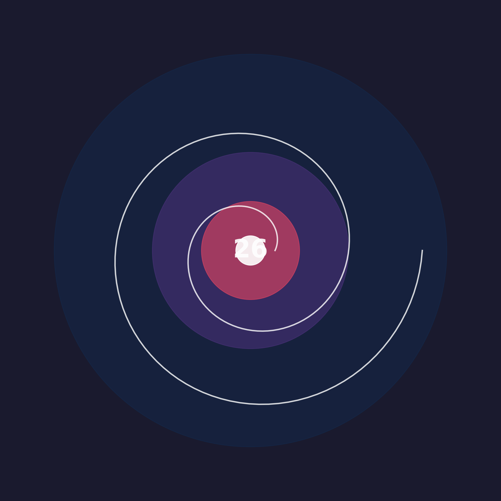

Stories of Resilience & Survival
Available on your favorite streaming platforms
Get the best experience by listening to the full album on your preferred platform
🎵 Album "26" - Stories of Resilience
5 inspiring songs about growth and resilience
Release date: 22 May 2026
A Complete Story in Five Chapters
Album "26" is a complete journey of a young person facing life's challenges, processing experiences, and finally finding peace within themselves. This is a universal story about growth that can be experienced by anyone, of any age and background.
Perjalanan dimulai dengan momen di mana kita harus belajar hal-hal baru lebih cepat dari yang diharapkan. Tanggung jawab datang lebih awal, tantangan membuat kita matang lebih cepat, dan kita mulai menyadari bahwa hidup tidak selalu sesederhana yang kita pikirkan.
"Sometimes the greatest growth comes from the challenges we never expected."
Di usia 26, kita mencapai titik di mana kita mulai mengevaluasi kembali arah perjalanan hidup. Ada perasaan sudah cukup dewasa, tapi juga sadar bahwa masih banyak yang perlu dipelajari. Kita mulai memahami bahwa setiap orang memiliki perjuangan internal yang tidak terlihat orang lain.
"Every age brings new wisdom, and every challenge brings new strength."
Di bab ini, kita memutuskan untuk tidak lagi menjadi versi diri yang lama. Ini adalah momen transformasi di mana kita menyadari bahwa kita punya kekuatan untuk memilih bagaimana merespons kehidupan. Masa lalu adalah guru, bukan penjara yang membatasi kita.
"Growth isn't about forgetting where we came from, it's about honoring how far we've come."
Transformasi mencapai puncaknya di sini. Kita belajar menerima semua bagian dari perjalanan hidup, menghargai versi diri yang lebih muda karena telah melakukan yang terbaik, dan menyadari bahwa setiap bekas luka adalah bukti bahwa kita telah bertahan.
"True transformation comes when we embrace all versions of ourselves."
Perjalanan berakhir dengan kesadaran bahwa pertumbuhan adalah proses seumur hidup. Kita semua sedang belajar menjadi versi terbaik dari diri kita, belajar memahami hal-hal kompleks dalam hidup, dan menemukan bahwa kita tidak perlu sempurna untuk bahagia.
"We are all works in progress, and that's what makes life beautiful."
Album "26" mengajarkan kita bahwa setiap tahap kehidupan memiliki nilainya sendiri. Dari masa muda yang penuh pertanyaan hingga dewasa yang penuh pemahaman, kita semua sedang dalam perjalanan untuk menjadi lebih baik setiap hari. Tidak ada akhir dari pertumbuhan, hanya babak-babak baru dalam cerita kita.